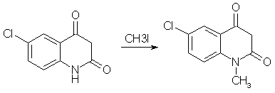
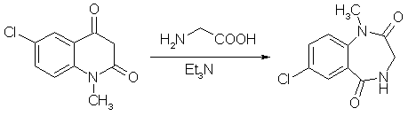
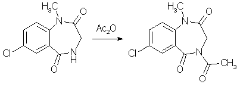
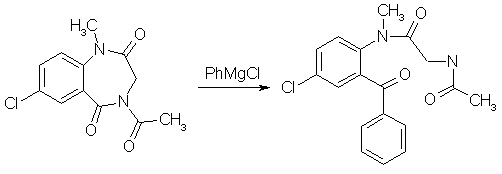
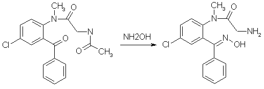
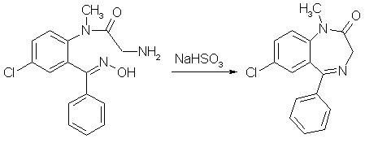

Diazepam (Valium) Synthesisby RhodiumIntroductionBenzodiazepines is a large class of compounds, used as sedatives, anxiolytics and/or skeletal muscle relaxants. They have a good therapeutic window, low toxicity and a wide variety of pharmacological profiles. The first synthesized benzodiazepine was Librium or Chlordiazepoxide, and it was discovered serendipiously by L. Sternbach and E. Reeder, when they submitted a sample of what they thought could be an antibiotic, that they were going to throw out anyway during a spring cleaning. But they determined the structure of the compound errorneously, it had rearranged itself to Librium during the synthesis. One of the benzodiazepines that came shortly after Librium was Diazepam, commonly sold under the trade name Valium, and it is is your typical benzodiazepine. It can be synthesized relatively easily in around 50% yield from the commercially available starting material 5-chloro-isatoic anhydride as can be seen below [1]. Experimental ProceduresAll these procedures are presented for informational purposes only. These procedures should not be carried out without adequate chemical knowledge, or necessary precautions taken. The author takes no responsibility for any consequences resulting from use or misuse of this information, may it be legal problems, loss of limbs or euphoria without limits.Diazepam synthesis I5-Chloro-N-methyl-isatoic anhydride[1,2] To a solution of 13 grams of 5-chloro-isatoic anhydride in 120ml of dimethylformamide, 7 grams of anhydrous sodium carbonate and 18 grams of methyl iodide was added. The reaction mixture was stirred for 20h at room temperature, and then poured into 700 ml of water to give crude N-methyl-5-chloro-isatoic anhydride. Recrystallization from acetic acid gave 85% yield of product melting at 201-203�C. 7-Chloro-1-methyl-3,4-dihydro-1H-1,4-benzodiazepine-2,5-dione[1] A mixture of finely ground 5-chloro-N-methylisatoic anhydride (5.19 g), 2.25g of glycine, 4.15 ml of triethylamine. and 30 ml of water was stirred at room temp for 5 hours. All solid material had disappeared after 3.5-4 h. Voilatile material was removed as completely as possible on a rotavap and the residue treated with 60 ml glacial acetic acid and heated to reflux for 4.5 hours. After the mixture cooled, as much acetic acid as possible was removed on the rotary evaporator, and the tan oily residue was treated with 30 ml of ether. On brief swirling of the mixture, crystallization set in, and the colorless crystalline materiual was collecting after standing overnight and was washed with ether (4.60g, mp 176.5-178�C). The etheral filtrate (two phases) was diluted with enough ethyl acetate to render it homogenous, washed twice with dilute sodium carbonate, then with water, filtered through anhydrous sodium sulfate, and concentrated. Recrystallization of the crystalline residue (0.53g) gave 0.43 g of product, mp 177-179�C. Total yield 5.03g (91.8%). 4-Acetyl-7-chloro-1-methyl-3,4-dihydro-1H-1,4-benzodiazepine-2,5-dione[1] A mixture of 1.0 gram of 7-Chloro-1-methyl-3,4-dihydro-1H-1,4-benzodiazepine-2,5-dione (compound 2 above), and 3 ml of acetic anhydride was heated to reflux in a craig tube for 2.5 h. The original suspension went into solution more or less rapidly, and after about 1h crystalline material began to separate, and was cooled, allowed to stand overnight, and collected. 1.12g (94%) of colorless prismatic blades, mp 207-208.5�C. 5-Chloro-2-(glycylmethylamino)-benzophenone[1] A suspension of 483mg (1.82mmol) finely ground 4-Acetyl-7-chloro-1-methyl-3,4-dihydro-1H-1,4-benzodiazepine-2,5- dione (from experiment 3 above) in 12 ml of THF, freshly freshly refluxed with and distilled from LiAlH4, was treated slowly over 20 min under stirring with 1.00ml (2.18 mmol, 1.2 equiv) of 2.18 N commercial (Fisher) phenylmagnesium chloride at room temp (15-18�. During the addition the tip of the delivery syringe was kept below the surface of the stirred solution. During the addition the solution becomes deep red, and the suspended material goes into solution. Stirring was continued for 1.5h after the addition was complete, during which the color lightens to a clear bright yellow. The reaction mixture was treated with ammonium chloride solution and extracted four times with CH2Cl2, the extracts were filtered through anhydrous Na2SO4 and concentrated, and the residue was pumped out at 100�C and reduced pressure to give 684 mg of yellow glass. This material consists predominantly of the product benzophenone with small amounts of the starting material, in a ratio 10.8:1 as determined by HPLC; in other runs the ratio varied between 7:1 and 10:1. 5-Chloro-2-(glycylmethylamino)-benzophenone oxime[1] Crude 5-Chloro-2-(glycylmethylamino)-benzophenone from experiment 4 above (568 mg) and 485mg hydroxylamine hydrochloride were heated in 10ml of pyridine under N2 in a bath maintained at 70�C for 45 hours. The pyridine was removed as completely as possible on a rotovap, and the residue taken up in an etheral solution of 3% HCl, the layers were separated, and the ether layer was extracted three more times with 3% HCl. The combined acid extracts was washed four times with CH2Cl2, the CH2Cl2 backwashed once with 3% HCl, and the combined 3% HCl extracts made basic with excess ammonia. The liberated basic material was taken into CH2Cl2 (four extractions), filtered through anhydrous Na2SO4, concentrated and pumped out to yield 259 mg of nearly colorless glass, which spontaneously crystallized; mp 202-204�C. The original ether raffinate and the CH2Cl2 washes of the 3% acid solution was combined, filtered and concentrated to yield 248mg of a yellow glass whose TLC showed it to contain quite a bit of unchanged ketone. It was heated under N2 with 210 mg of hydroxylamine hydrochloride in 7 ml of pyridine at 70�C for 43.5 hours as above. A similar workup yielded 106 mg more oxime, mp 201-203.5�C and 122 mg of acid-insoluble material. The oxime, when crystalline is very sparingly soluble in most organic solvents. After several recrystallizations from methanol, colorless crystals with a mp of 212-213�C was obtained. Diazepam[1] 378 mg of the crude product obtained in experiment 6 above was refluxed for 12 h with 1.13 g of NaHSO3 in a mixture of 15ml of alcohol and 7.5 ml of water. Most of the alcohol was removed under vacuum, and the residue treated with ether and 3% HCl. The ether layer was washed three more times with 3% HCl, and then the combined acid fractions were extracted five times with CH2Cl2. The extracts were filtered through anhydrous Na2SO4 and concentrated. The orange-yellow residue (303mg, 89.3% after thorough drying) crystallized readily on seeding with diazepam, and had a melting point of 129-131.5�C. Diazepam (alternative route from compound 4)[1]502 mg of crude 5-Chloro-2-(aceturoylmethylamino)-benzophenone (product from experiment 4) was dissolved in 25 ml of methanol and treated with 100% H2SO4 under reflux for 3.25h. Most of the methanol was removed under vacuum, and the residue was taken up in a mixture of 25 ml water and 25ml of ether. The layers were separated, and the ether layer was washed three times with a 3% HCl solution, and the combined aqueous layers was made basic with ammonia and extracted four times with methylene chloride. The extracts were washed with a small amount of water, filtered through anhydrous Na2SO4, and concentrated to give 264 mg of a pale yellow glass. This residue was taken into about 2-3 ml of alcohol and treated with 60% perchloric acid until acid to congo red. Crystallization of the sparingly soluble Diazepam Perchlorate begins almost at once. It is filtered and wased with a little alcohol. Yield 255mg (52.5%). The perchlorate was converted to the freebase by distributing between methylene chloride and dilute ammonia (three extractions with CH2Cl2). The washed, filtered and concentrated organic extracts yielded 191mg of very pale yellow glass which crystallized readily; mp 130-131.5�C. Diazepam synthesis II2-amino-5-chlorobenzophenone[3]Under Construction!2-amino-5-chlorobenzophenone alpha/beta-oxime[4]A mixture of 200g of 2-amino-5-chlorobenzophenone (compound 1 above), 100g of hydroxylamine hydrochloride and 1 liter of alcohol was stirred under reflux for 22h. The mixture was concentrated under vacuum to a small volume, diluted with water and neutralized with sodium carbonate. Benzene was then added, and the stirring was then continued until a considerable amount of crystalline precipitate had formed. Some petroleum ether was added, and the mixture was filtered. The crude alpha-oxime (139g, mp 150-160�C) remaining in the funnel was washed with benzene and petroleum ether. After recrystallization from a mixture of ether and petroleum ether, it forms colorless prisms melting at 164-167�C. The aqueous layer of the filtrate was separated and discarded. The organic solution was dried, concentrated in vacuum, and the residue taken up in ether. The ether solution was filtered, diluted with petroleum ether and kept at 0�C for 20h. The precipitated crystals, a mixture of the isomers (42g, mp 119-122�C), was filtered off. A third crop of crystals was obtained from the mother liquors after concentration to a sirup. It consisted of 8g of prisms melting at 127-130�C. This product can be recrystallized from ether/petroleum ether to form pure beta-oxime, mp129-132�C. The total yield of 189g (both alpha- and beta-oximes)corresponds to 89%. 2-Amino-5-chlorobenzophenone beta-oxime (from the alpha oxime)[5]A solution of 20 grams of 2-Amino-5-chlorobenzophenone alpha-oxime (compound 2 above) in 150 cc of formic acid (98-100%) was refluxed for 3h, concentrated under vacuum to a small volume and neutralized with cooling with 3N NaOH. The precipitated quinazolide 3-oxide was filtered off and dissolved in 100ml of alcohol, and after the addition of 40 ml 3N NaOH the solution was refluxed for 15min. The solution was then partly concentrated in vacuum, and the beta-oxime precipitated by the addition of dry ice (solid CO2). It was extracted with ether and crystallized by partial concentration. It formed prisms (7.7g) melting at 129-132�C. 2-Chloroacetamido-5-chlorobenzophenone beta-oxime[5]Into a stirred, cooled (10-15�C) solution of 26.2g (0.1 mole) of 2-Amino-5-chlorobenzophenone beta-oxime (compound 3 above) in 150 cc of dioxane were introduced in small portions 12.4g (0.11 mole) of chloroacetyl chloride and an equivalent of 3N sodium hydroxide. The chloroacetyl chloride and sodium hydroxide solution were introduced alternately at such a rate as to keep the temperature below 15�C and the mixture neutral or slightly alkaline. The reaction was completed after 30 min. The mixture was then acidified with HCl, diluted with water and extracted with ether. The ether extract was dried and concentrated under vacuum. Upon the addition of ether to the oily residue, the product crystallized in colorless prisms melting at 166-167�C. The yield was about 50%. 7-Chloro-5-phenyl-3H-1,4-benzodiazepin-2(1H)-one 4-oxide[5]To a solution of 6.4g (20 mmol) of 2-Chloroacetamido-5-chlorobenzophenone beta-oxime (compound 4 above) in 60cc of dioxane was added 20 cc of 1N NaOH. After 15h, the mixture was diluted with ice cold 1N NaOH and extracted with ether. The ether extracts was discarded, the alkaline solution acidified and extracted with methylene chloride. The organic solution was concentrated to a small volume, and diluted with petroleum ether, yielding 3.1g (54%) of the title compound. 7-Chloro-1-methyl-5-phenyl-3H-1,4-benzodiazepin-2(1H)-one 4-oxide[5]To a stirred warm solution of 15 grams of 7-Chloro-5-phenyl-3H-1,4-benzodiazepin-2(1H)-one 4-oxide (compound 5 above) in 700 cc of methanol were added 2.78 grams of sodium methoxide, and after 5 min, 5 cc of dimethyl sulfate. The reaction mixture was refluxed for 1 h, concentrated in vacuum to a small volume, and dilute with ether and petroleum ether. The formed crystals (11g, 70%) were filtered and washed with water. After recrystallization from acetone, colorless prisms melting at 188-189�C were obtained. Diazepam[5]A mixture of 3g of 7-Chloro-1-methyl-5-phenyl-3H-1,4-benzodiazepin-2(1H)-one 4-oxide (compound 6 above), 30 cc of chloroform and 1 cc of phosphorous trichloride was refluxed for 4 hours. The reaction mixture was then poured on ice and stirred with an excess of 40% NaOH solution. The chloroform solution was separated, dried with sodium sulfate, filtered and concentrated under vacuum. The residue was dissolved in methylene chloride and was crystallized by the addition of petroleum ether yielding 1.8g (63%) of the crystalline reaction product (mp 120-122�C). after recrystallization from a mixture of petroleum ether and acetone, the product formed colorless plates melting at 125-126�C. The same compound was also formed in almost quantitative yield by catalytic hydrogenation of compound 6 in methanol at atmospheric pressure (30-50�C) using Raney-Nickel as catalyst. Diazepam synthesis III [6]Into a stirred, cooled (10'-15'C) solution of 26.2 g (0.1mol) of 2-amino-5-chlorobenzophenone-�-oxime in 150 ml of dioxane were introduced in small portions 12.4 g (0.11 mol) of chloroacetyl chloride and an equivalent amount of 3 N NaOH. The chloroacetyl chloride and NaOH were introduced alternately at such a rate so as to keep the temperature below 15�C and the mixture neutral or slightly alkaline. The reaction was completed after 30 minutes. The mixture was slightly acidified with HCl, diluted with water and extracted with ether. The ether extract was dried and concentrated in vacuo. Upon the addition of ether to the oily residue, the product, 2-chloroactetamido-5-chlorobenzophenone �-oxime crystallized in colorless prisms melting at 161-162�C. 20 ml of 1 N NaOH were added to a solution of 6.4 g (20 mmol) of 2-chloroactetamido-5-chlorobenzophenone �-oxime. After 15 hours the mixture was diluted with ice cold 1 N NaOH and extracted with ether. The ether extract was discarded. The alkaline solution was acidified with HCl and extracted with methylene chloride. The methylen chloride solution was concentrated to a small volume and then diluted with petroleum ether to obtain 7-chloro-5-phenyl-3H-1,4-benzodiazepin-2(1H)one 4-oxide. To a stirred suspension of 10 grams (35 mmol) of 7-chloro-5-phenyl-3H-1,4-benzodiazepin-2(1H)one 4-oxide in approximately 150 ml methanol was added in portions an excess of diazomethane in ether. After about one hour, almost complete solution had occurred and the reaction mixture was filtered. The filtrate was concentrated in vacuo to a small volume and diluted with ether and petroleum ether. The reaction product, 7-chloro-1-methyl-5-phenyl-3H-1,4-benzodiazepin-2(1H)one 4-oxide, crystallized in colorless prisms. The product was filtered off and recrystallized from acetone, MP 188-189�C. A mixture of 3 grams (0.01 mol) of 7-chloro-1-methyl-5-phenyl-3H-1,4-benzodiazepin-2(1H)one 4-oxide, 30 ml of chloroform and 1 ml of phosphorus trichloride was refluxed for 1 hour. The reaction mixture was then poured on ice and stirred with an excess of 40% NaOH solution. The chloroform was then separated, dried with sodium sulfate, filtered and concentrated in vacuo. The residue was dissolved in methylene chloride and crystallized by the addiction of petroleum ether. The product, 7-chloro-1-methyl-5-phenyl-3H-1,4-benzodiazepin-2(1H)one, was recrystallized from a mixture of acetone and petroleum ether forming colorless plates melting at 125-126�C. Diazepam synthesis IV (By Psycho Chemist)[7,8,9]2-Methylamino-5-chloro-benzophenoneDissolve 400 g sodium hydroxide in 4 L ethanol and in a seperate flask, 1.5 moles (175.5 g) benzyl cyanide (see elsewhere on this site for its synthesis) and 1 mole 1-chloro-4-nitrobenzene and the min. amoount benzene or toluene or THF to obtain a solid-free solution. Add dropwise this organic mixture to the NaOH in alcohol at 17-22�C (control by cooling), and leave the mix for 4 days. Pour on 3 kg ice and 12 L water (This mix now contains cyanide and must not be contaminated with acid!!!). Vacuum-filter (in portions) the resinous mass or decant off the water layer. Dissolve the water-washed resin in 1 L (or more, but loss) boiling isopropanol and let cool down to 10�C, after 1 day, filter the intermediate, 0.9 moles or about 200 g 5-chloro-3-phenyl- benzo(2,1)-isoxazole. A mix of 200 g benzisoxazole and 500 ml dimethyl sulfate (caution) is stirred 12 h at 80�C (4 L flask), and through the condenser thereafter, 100 mL water and 2 L ethanol is added , then, direct to the flask, 100 g iron fillings. The flask content is mechanically stirred and over 90 min., 600 mL conc. hydrochloric acid is added. Then the mix is refluxed 90 min and filtered over Celite hot. The cake is washed with 1 L hot ethanol and the filtrate concentrated in vacuo to 500 mL. It is poured in 4 L water and 1 L dichloromethane is added until most is dissolved. The dichloromethane layer is seperated and reextracted with 1 L more dichloromethane. The combined dichloromethane extracts are filtered and evaporated to dryness to leave the 2-methylamino- 5-chloro-benzophenone, cryst. From petrol ether, mp 95-98�C. Yield 180 g. Diazepam (personal experience)Dissolve 180 g 2-methylamino-5-chlorobenzophenone in 1 l dry dichloromethane, add 100 g chloroacetyl chloride over 1 h and reflux 10 h. Rotovap off the dichloromethane (dryness in the flask, end (60 �C, 20 torr). Dissolve 400 g hexamethylene tetramine (urotropine) in 3 l ethanol, and add to the chloroacetylated residue. Reflux and stirr 24 h (all organic material is dissolved) and then evapotate to dryness. Add 100 mL toluene, and 1 g toluenesulphonic acid, and reflux with a Dean-Stark water-trap until no more water separates. Add 1 L water, heat to 70�C and let cool down to 15�C. Filter off your diazepam, and wash with 50 mL ice-cold toluene. Dry in vacuo. Almost pure 150 g Diazepam will result. References[1] M. Gates, New Synthesis of Diazepam J. Org. Chem. 45, 1675-1681 (1980)[2] G. Palazzo, B. Silvestrini, Substituted anthranilamides and preparation thereof, US Pat. 3,409,668 [3] J. Chem. Soc. 85, 344, (1904) and Chem. Abs 30, 2972 (1936) [4] L.H. Sternbach, S. Kaiser, E. Reeder, Quinazolidine Compounds, J. Am. Chem. Soc. 82, 475-480 (1960) [5] L.H. Sernbach, E. Reeder, Quinazolidines and 1,4-Benzodiazepines IV, J. Org. Chem. 26, 4936-4941 (1961) [6] US Pat. 3,136,815 [7] Chem Abstr. 123-339841 p [8] Russ. J. Org. Chem., Vol. 30, p 1481-1484 (1994) (english) [9] Coll. Czechoslovak Chem. Commun., Vol. 50, p 1064-1069 (1985) |